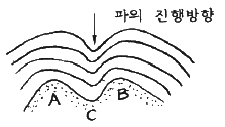
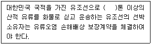

해양환경기사 (2016-05-08 기출문제)
1과목: 해양학개론
1. 다음 중 해저광물자원으로 대단히 중요한 인회토가 가장 발달할 수 있는 곳은?
- 파도가 우세한 해역
- 산호초가 발달하는 해역
- 심해의 저탁류 우수해역
- 용승현상이 우세한 내대륙붕의 해저
(정답률: 44%)

2. 바닷물을 구성하는 성분의 평균 체류시간의 순서가 올바른 것은?
- Cl- ＞ Na+ ＞ Mg2+ ＞ Mn
- Cl- ＞ Na+ ＞ Mn ＞ Mg2+
- Cl- ＞ Mg2+ ＞ Na+ ＞ Mn
- Cl- ＞ Mn ＞ Na+ ＞ Mg2+
(정답률: 72%)
3. 파랑의 에너지는 파고(H)의 얼마에 비례하는가?
- H
- H-1/2
- H1/2
- H2
(정답률: 88%)
4. 다음 중 열대저기압과 발생지역의 연결이 틀린 것은?
- 태풍(tuphoon) - 북태평양
- 사이클론(Cyclone) - 북인도양
- 허리케인(Hurricane) - 북대서양
- 윌리월리(Willy-Willies) - 지중해
(정답률: 89%)
5. 다음 중 조석도(tidal chart)에 표시되어 있는 것은?
- 조류
- 조차와 조시
- 조시 및 조류
- 조차 및 조류
(정답률: 77%)
6. 퇴적물의 입도 분석에서 입자의 크기가 0.004mm, 이하의 것은 어떤 범주로 분류되는가?
- 모래
- 실트
- 점토
- 가는 자갈
(정답률: 76%)
7. 해수 내 용존원소 중 보존성성분이 아닌 것은?
- Li
- Na
- Cr
- K
(정답률: 57%)
8. 해파(海波)의 성장에는 일정한 바람이 불고 있는 풍상측의 수면의 길이가 중요한데 이 거리를 무엇이라 하는가?
- fetch
- swell
- duration
- group velocity
(정답률: 82%)
9. 다음 해수의 주성분(major element) 중 가장 높은 농도를 나타내는 염류는?
- Ca2+
- K+
- SO42-
- HCO3-
(정답률: 72%)
10. 해양지각의 가장 얕은 부분에 해당하는 제1층의 음파속도로 가장 적당한 것은?
- 1.7 ~ 2.5 km/s
- 4.5 ~ 5.5 km/s
- 6.7 ~ 6.9 km/s
- 8.1 km/s 이상
(정답률: 71%)
11. 망간 단괴의 형성과정을 설명한 것 중 가장 적합한 표현은?
- 해빈사내에서 가장 많이 발견됨
- 제4기 이후에 퇴적된 것이 해저에서 발견되었음
- 저탁류에 의해서 대륙붕의 퇴적물이 이동하여 퇴적되었음
- 해수중의 여러 화학 물질이 자생발생적으로 해저에서 형성됨
(정답률: 65%)
12. 다음 분급도(sorting)중에서 가장 분급이 양호한 것은?
- 0.75
- 1.0
- 1.25
- 1.50
(정답률: 80%)
13. 밀도류에 대한 설명 중 가장 옳은 것은?
- 바람의 방향과 일치한다.
- 원인으로는 태양의 인력이 있다.
- 해수의 용존산소와 깊은 관계가 있다.
- 밀도차를 없애기 위해 생기는 해수의 유동이다.
(정답률: 86%)
14. 수심이 파장의 1/4보다 깊은 해양에서, 주기 10초의 파를 관측하였다. 이 파의 파속은 얼마인가?
- 약 8m/sec
- 약 16m/sec
- 약 80m/sec
- 약 160m/sec
(정답률: 64%)
15. 블랙스모커와 화이트스모커를 온도와 분출속도로 비교한 내용으로 적합한 것은?
- 블랙스모커는 화이트스모커에 비해 온도도 낮고 분출속도도 작다.
- 블랙스모커는 화이트스모커에 비해 온도도 높고 분출속도도 크다.
- 블랙스모커는 화이트스모커에 비해 온도도 높으나 분출속도는 작다.
- 블랙스모커는 화이트스모커에 비해 온도도 낮으나 분출속도는 크다.
(정답률: 78%)
16. Ekman의 취송류 이론에서 상부마찰심도와 가장 관련이 있는 것은?
- 풍속
- 풍향
- 수평와동 점성계수
- 연직와동 점성계수
(정답률: 77%)
17. 8월, 북대서양에서 증발한 수증기는 무역풍에 의해 서쪽으로 운반되고, 파나마운하를 빠져나와 태평양에서 비가 되어 강하하게 된다. 그 결과 염분 변화는 어떠하겠는가?
- 북태평양과 북대서양의 염분이 같다.
- 북태평양과 북대서양의 염분 변화는 없다.
- 북태평양의 염분이 북대서양에서보다 높다.
- 북대서양의 염분이 북태평양에서보다 높다.
(정답률: 61%)
18. 정상해수(염분 35‰)가 어느 빙점은 –2℃이다. 해수의 염분이 증가할수록 해수의 빙점은?
- 내려간다.
- 올라간다.
- 변화가 없다.
- 어느 정도까지 내려가다가 다시 올라간다.
(정답률: 82%)
19. 반일 주조의 조석주기가 정확히 12시간이 아닌 이유는?
- 달의 공전 때문
- 지구의 공전 때문
- 지구의 자전 때문
- 태양의 공전 때문
(정답률: 72%)
20. 해수의 온도차발전(OTEC)건설의 일반적인 최적지는?
- 남극지역
- 고위도 지역
- 저위도 지역
- 중위도 지역
(정답률: 59%)
2과목: 해양생태학
21. 다음 중 부유물식자가 취하는 먹이와 가장 거리가 먼 것은?
- 규조류나 편모조류를 포함하는 식물플랑크톤
- 바닥에 퇴적된 현미경적 크기의 미소 조류
- 수중에서 자유생활을 하는 박테리아
- 수중의 유·무기 입자에 붙어 있는 박테리아 등의 부유성 물질
(정답률: 69%)
22. 표류 해조류에 주로 산란하는 어류는?
- 갈치
- 숭어
- 참조기
- 학공치
(정답률: 70%)
23. 오염해역의 지표종으로서 가장 잘 알려져 있는 저서생물 종은?
- Nereis grudei
- Capitella capitata
- Nephtys ciliata
- Glycera chirori
(정답률: 80%)
24. 식물플랑크톤의 직접 과정에 관련한 내용과 가장 거리가 먼 것은?
- 랭뮈르 순환(Langmuir circulation)
- 식물성 플랑크톤의 개체 분열방식
- 빛, 영양염류 등이 좋은 환경
- 포식자로부터 도피하기 위한 유영이동
(정답률: 71%)
25. 질소 고정능력은 영양염이 부족한 외양에서 새로운 질소 영양염 공급원으로서 중요한 의미를 갖게 되는데 원핵세포로 이루어져 질소고정을 할 수 있는 능력을 가진 부유생물군은 무엇인가?
- 규조류
- 와편모조류
- 코콜리소포
- 남조류
(정답률: 61%)
26. 해양의 일차생산력을 구하는 측정 방법이 아닌 것은?
- 명압병 측정법
- C-14 측정법
- 부유식물 현존량 변화 측정법
- 보상수심측정법
(정답률: 66%)
27. 조간대 생물상은 대체로 그 분포 패턴이 대상구조(horizontal banding, 또는 zonation)를 이룬다. 이를 설명한 것 중 옳지 않은 것은?
- 조간대 지역은 조석에 따라 주기적으로 대기에 노출되므로 해수면으로부터의 높이, 간출시간의 길이 등에 따라 온도, 건조, 먹이, 섭취시간의 길이 등이 달라지며 또 이에 따라 여기에 적응하는 생물의 종류도 다르게 나타나기 때문이다.
- 조간대에서는 조석에 따라 일정 높이를 기준으로 하여 환경이 유사하므로 대체로 같은 조위에서 유사한 생물이 분포하는데, 대체로 해수며에 수평으로 높이에 따라 달라지는 대상분포의 패턴이 나타난다.
- 조간대 생물의 대상분포는 조석운동 이외에도 경쟁이나 포식 등 조간대 생물간의 상호작용과 각 생물의 적응 정도에 의해 결정된다.
- 조간대 생물의 분포 패턴은 연성기질의 갯벌에서는 뚜렷한 대상분포가 나타나나, 암반해안에서는 극심한 파도의 영향으로 그것이 분명하지 않은 것이 특징이다.
(정답률: 78%)
28. 어류는 포식자의 눈에 잘 띄지 않도록 체형, 체색 등이 적용되어 있다고 볼 때 그와 거리가 먼 것은?
- 어류의 등쪽은 바닷물을 위에서 보았을 때의 색과 같다.
- 어류의 배쪽은 물속에서 위로 보았을 때의 은백색과 유사하다.
- 부어류의 배쪽은 뾰족한 것보다는 둥글게 되어 그림자가 생기지 않는다.
- 가자미류는 등색깔이 해저 바닥과 비슷한 회색 또는 모래색이다.
(정답률: 80%)
29. 하구역에 서식하는 저서동물이 하구환경에 적응하는 방법이 아닌 것은?
- 광염성의 특성을 지닌다.
- 퇴적물에 잠입하여 급격한 염분변화를 피한다.
- 삼투압 조절을 위해 염류배출 세포가 있다.
- 생식시기에는 염분농도가 높은 곳으로 이동한다.
(정답률: 62%)
30. 하구역 조하대 연성저질에 서식하는 대형저서동물 군집의 공간 분포에 영향을 미치는 환경요인이 아닌 것은?
- 노출시간
- 퇴적상
- 생물상호작용
- 염분농도
(정답률: 51%)
31. 해양에서 보상심도의 변화에 가장 영향을 주는 환경요인은 다음 중 어느 것인가?
- 염분도
- 투명도
- 수온
- 영양염
(정답률: 68%)
32. 다음은 해양 저서생물의 유생생태에 대한 설명이다. 바르게 설명한 것은?
- 대부분의 유생은 성체와 매우 유사한 형태적 특징을 가지므로 식별이 비교적 쉽다.
- 부유유생 시기의 생존과 저서생활로의 정착의 성패 여부는 이들 저서생물에게는 분포해역의 확대 및 지역 집단의 유지, 집단간의 유전자 교류 등에 중요한 의의를 가진다.
- 저서생물의 개체군의 변동은 부유유생 시기의 초기감모(early reduction) 보다는 가입 후 성장을 거치면서 산란 직전에 일어나는 경우가 많다.
- 저서생물은 저생기(底生期)의 유치체(幼稚體, benthic jevenile)로 직접 발생하는 것이 특징이다.
(정답률: 69%)
33. 다음 중 간극동물(Interstitial fauna)의 군집발달에 영향을 미치는 가장 큰 환경요인은?
- 해류
- 저질의 입도조성
- 수온
- 먹이 관계
(정답률: 73%)
34. 다음 적조발생의 설명 중 틀린 것은?
- 적조란 플랑크톤이 크게 발생하여 해수를 변색시키는 현상이다.
- 적조는 항상 정체수역에는 발생하기 매우 어렵다.
- 적조는 어패류의 폐사 원인이 된다.
- 적조는 부영양화가 진행되면 발생한다.
(정답률: 81%)
35. 다음 중 일반적으로 영양염류가 풍부하고 치어 성육장으로 가치가 가장 큰 수역은?
- 외해(open sea)
- 강 하구역(estuary)
- 쿠로시오(黑潮) 유역
- 조경(潮境) 형성 유역
(정답률: 80%)
36. 해양수역의 바닥에 서식하는 식물이나 동물의 성장이나 행동에 가장 많은 영향을 주는 광선은?
- 청색광
- 적색광
- 등색광
- 황색광
(정답률: 81%)
37. 다음은 조간대 생태학에 대한 개념 설명이다. 맞지 않는 것은?
- 조간대는 해양의 서식처 중에서 환경요인의 변화가 가장 큰 지역이다.
- 조간대 생물의 섭식이나 번식에는 일반적으로 분해자의 역할이 가장 크다.
- 조석은 매일 예측 가능한 해수면의 상승과 하강을 말하며, 조간대 생물에게 영향을 미치는 가장 중요한 요소들 중의 하나이다.
- 조간대에서 대기중으로 노출되는 시간의 길이는 조간대 생물의 분포와 성장에 지대한 영향을 미친다.
(정답률: 68%)
38. 해양 포유류의 수중생호라 적응과 관련된 설명 중 틀린 것은?
- 열손실을 최소화시키기 위해 생물의 크기가 크다.
- 열손실을 줄이기 위해 열전도율이 낮은 지방을 피하에 축적시킨다.
- 바다새와 같이 삼투적응에 필요한 염분비선을 갖고 있다.
- 혈액의 양이 많고, 혈액의 산소 저장능력도 크다.
(정답률: 76%)
39. 어패류를 독화하여 마비성 식중독(PSP)을 일으키는 식물플랑크톤이 소가는 속명은?
- Alexandrium 속
- Heterosigma 속
- Dinophysis 속
- Cochlodinium 속
(정답률: 68%)
40. 조에아(zoea)는 다음 중 어느 생물에서 볼 수 있는가?
- 꽃게
- 오징어
- 백합
- 갯지렁이
(정답률: 82%)
3과목: 해양계측학
41. 동일한 지점의 깊은 곳과 얕은 곳에서 채취한 2개의 해수시료의 온위(Potential temperature)가 같았을 때 이 2개 해수시료의 현장온도(in situ temperature)는?
- 양쪽이 같다.
- 깊은 곳의 것이 더 높다.
- 얕은 곳의 것이 더 높다.
- 2개 해수시료 모두 온위와 값이 같다.
(정답률: 79%)
42. 취송류이론에 의한 상부마찰심도(上部摩擦深度)에서의 유속은 표면유속의 몇 분의 1인가?
- 약 1/7 이다.
- 약 1/15 이다.
- 약 1/23 이다.
- 약 1/57 이다.
(정답률: 62%)
43. 해수내 부유물질의 측정방법이 아닌 것은?
- 여과법
- 희석법
- 광산란법
- 원심분리법
(정답률: 45%)
44. CTD로 측정할 수 있는 것은?
- 수온, 염분, 수심
- 수온, 탁도, 수심
- 수온, 염분, 영양염
- 수온, 탁도, 영양염
(정답률: 74%)
45. 조석 관측에서 양질의 자료로 적절한 분석이 이루어졌을 때 나타나는 현상은?
- 잔여치(Residual)가 아주 규칙적이며 주기적 oscillation이 있다.
- 잔여치(Residual)가 아주 규칙적이며 주기적 oscillation이 없다.
- 잔여치(Residual)가 아주 불규칙적이며 주기적 oscillation이 있다.
- 잔여치(Residual)가 아주 불규칙적이며 주기적 oscillation이 없다.
(정답률: 71%)
46. 전파에 의한 선위 측정방법에 해당하는 것은?
- 시간차의 곡선법이다.
- 시간차의 직선법이다.
- 시간차의 쌍곡선법이다.
- 시간차의 포물선법이다.
(정답률: 51%)
47. 유속관측의 간접 방법 중 맞는 것은?
- 수온, 염분 등으로 밀도분포를 구하여 추산한다.
- 수심, 염분 등으로 밀도분포를 구하여 추산한다.
- 수압, pH으로 밀도분포를 구하여 추산한다.
- 수색, DO으로 밀도분포를 구하여 추산한다.
(정답률: 64%)
48. 현탁성물질을 여과하는데 통상 사용되는 Millipore filter HA형의 공경은 약 얼마인가?
- 0.3 μm
- 0.45 μm
- 0.85 μm
- 1 μm
(정답률: 80%)
49. 인천항의 비조화상수가 대조승 8.6m, 소조승 6.4m, 평균해면 4.6m 일 때 대조차는?
- 6.4m
- 8.0m
- 8.6m
- 9.2m
(정답률: 70%)
50. 해저 지형 조사 시 사용되는 장비와 가장 거리가 먼 것은?
- DGPS
- Thermal scanner
- Side scan sonar
- Multi beam echosounder
(정답률: 65%)
51. 조석관측 방법으로 이용되지 않는 것은?
- 부표식
- 압력식
- 지자기식
- 초음파식
(정답률: 76%)
52. 조석관측에 관한 사항 중 분점조(Equinocital tide)란?
- 삭, 망 시의 조석
- 상, 하현 시의 조석
- 달의 적위가 최대일 때의 조석
- 달이 적도부근에 있을 때의 조석
(정답률: 50%)
53. 원격탐사 시 탐지기에 입사하는 해면으로부터의 빛의 종류가 아닌 것은?
- 태양광
- 대기산란광
- 해면에서의 표면 반사광
- 해중으로부터 위로 향하는 수중광
(정답률: 45%)
54. 그림과 같은 해저지형 위를 파가 연안을 향해 화살표 방향으로 진행한다면 연안 A, B, C 지점 중 파고가 증가하는 모든 지점은?

- A, B
- A, C
- B, C
- C
(정답률: 81%)
55. 심해저 시추선의 실험실에서 사용하는 Hamilton frame은 다음 중 퇴적물의 무엇을 측정하는 장치인가?
- 밀도
- 공극율
- 잔류자기
- 음파전달속도
(정답률: 53%)
56. 다음 중 해저시형의 관찰로 대양저산맥의 확장을 연구하려 할 때 사용되는 장비로 가장 적합한 것은?
- 수중카메라
- 음향측심기
- 해상중력계
- 측면주사 음향탐사기
(정답률: 77%)
57. 수온을 측정할 수 있는 매체와 측정원리를 나열한 것 중 관계 없는 것은?
- 열전온도계 – 열전기쌍의 기전력을 이용
- 전도온도계(Reversing Themometer) - 수온의 열팽창을 이용
- 수정(quartz) - 온도 변화에 따라 수정분자의 진동수가 달라지는 성질을 이용
- Themistor – 어떤 반도체(Semi-conductor)가 온도에 따라 전기저항이 달라짐을 이용
(정답률: 65%)
58. 최근 해상에서 배의 위치를 정확히 알고자 하는 항법으로 널리 사용되는 위상항법의 원리는 어떠한 원리를 이용한 것인가?
- Wien law
- 천문항법원리
- Doppler 효과원리
- Stefan-Boltzmann Law
(정답률: 78%)
59. 퇴적물 식별에 이용되는 음파탐사법 중 해저 아래 수백 m 까지를 탐사하는데 적용되는 주파수는?
- 수십 Hz
- 수백 Hz
- 1 kHz 전후
- 5 kHz 전후
(정답률: 75%)
60. GEK 해류계 감지부인 케이블 내의 두 전극사이의 거리는?
- 약 1m
- 약 10m
- 약 100m
- 약 1,000m
(정답률: 76%)
4과목: 해수의 수질분석
61. 해수의 대장균군 시험방법이 아닌 것은?
- MPN법
- AGP 시험법
- 막여과에 의한 시험법
- 발색제에 의한 시험법
(정답률: 67%)
62. 원자흡광광도계를 이용한 분석 시 flame의 조정(가연성-지연성 가스) 중 가장 널리 사용되는 것은?
- 프로판-공기
- 아세틸렌-공기
- 아세틸렌-질소
- 아세틸렌-이산화탄소
(정답률: 68%)
63. 다음 측정 항목 중 시료용기로서 폴리에틸렌 용기를 사용해야 할 것은?
- 유기인
- 페놀류
- 규산염 규소
- N-Hexane 추출물질
(정답률: 70%)
64. 해수중 유기주석화합물(TBT) 분석에 대한 설명으로 틀린 것은?
- 기체크로마토그래프로 분리하여 전자포획검출기(ECD)로 분석한다.
- 현장에서 시료를 채취하여 1L 유리용기에 넣은 후 분석 시까지 냉장 보관한다.
- 기체크로마토그래프 및 검출기를 이용한 기기검출한계는 95% 신뢰구간에서 10ng/L 미만이다.
- 유기주석화합물은 분해 및 생분해될 우려가 있으므로 차광용기를 사용하여 빠른 시간 안에 분석한다.
(정답률: 47%)
65. 해수시료중의 용매추출유분을 측정하는 과정 중 틀린 것은?
- 염화메틸렌이나 사염화탄소 등의 유기용매로 추출한다.
- 내부 표준용액으로 2, 2, 4-트리메틸펜판을 사용하여 회수율을 확인한다.
- 형광분광광도계를 이용하여 흥분파장 310nm와 형광 파장 360nm에서 형광세기를 측정한다.
- 회전식 증발기를 이용해 감압상태에서 유기용매를 증발시킨 후 다시 N-헥산에 용해시킨다.
(정답률: 56%)
66. 카드뮴환원법에 의한 질산염 측정법에 대한 설명으로 틀린 것은?
- 발색된 시료의 최대 흡수 파장은 543nm 이다.
- 질산 질소는 카드뮴 환원관을 이용하여 아질산질소를 측정한다.
- 반응용액이 과도한 산성이면 질산 질소의 환원이 부분적으로 일어난다.
- 환원효율이 95% 이하면 환원관을 재활성화하거나 다시 만든다.
(정답률: 50%)
67. 중금속을 분석하기 위하여 해수시료 중 함유된 유기물을 분해하는 방법으로 옳은 것은?
- 시료를 끓인다.
- 시료에 자외선을 조사한다.
- 시료를 얼린 후 다시 녹인다.
- 시료에 질소 기체를 유입시킨다.
(정답률: 50%)
68. 분광광도계에 의한 클로로필-a 의 측정에 사용되는 기구가 아닌 것은?
- 건조기
- 교반기
- 여과기
- 원심분리기
(정답률: 66%)
69. 해수 시료 중 Pb의 전처리 과정으로 옳은 것은?
- pH 10으로 알칼리성으로 만든 후 아세톤으로 추출한다.
- 유기용매인 CH2Cl2 로 추출하여, 황산 0.1N에 희석하여 사용한다.
- pH 2로 처리한 후, 유기착화제로 유기금속착화합물을 형성한 후, 기화시켜 냉트랩으로 포착한다.
- CHCl3, freon 등으로 추출한 후, 비금속착화합물 형성 후 열판을 이용하여 휘발·건조시킨 다음 잔유물을 질산용액으로 재용해한다.
(정답률: 29%)
70. 퇴적물 내 유기물의 함량은 저서환경의 질을 평가하는 척도의 하나로 널리 사용되고 있으며, 이를 측정하기 위하여 일반적으로 유기물을 대표하며 비교적 측정이 용이한 유기탄소를 이용하여 측정하는데 이와 관련된 유기탄소량 시험방법 중 틀린 것은?
- 적정은 0.1N 황산암모늄 제2철 용액으로 한다.
- 지시약으로는 녹말지시약을 2~3방울 넣는다.
- 검출한계는 0.1N 산화제를 사용할 경우 0.02% 이다.
- 적정 시 종말점은 밝은 파란색에서 진한 갈색으로 바뀌는 점으로 한다.
(정답률: 56%)
71. Microtox bioassay 시험방법 중 유기용매추출법에 의한 독성평가방법의 특징이 아닌 것은?
- 전처리 과정이 복잡하다.
- 공극수가 제거된 퇴적물을 대상으로 한다.
- 주로 중성 또는 비이온성 유기물질의 독성을 검색한다.
- 시료 간의 염분 차이에 의한 발광도 차이를 보정해야 한다.
(정답률: 41%)
72. 해수 시료 2L를 여과해서 여과지를 건조시킨 다음 무게를 측정하였더니 0.1626g 이었다. 여과지의 무게를 0.1487g 이라고 하면 부유물질 농도는?
- 5.45 mg/L
- 6.95 mg/L
- 10.90 mg/L
- 13.90 mg/L
(정답률: 65%)
73. 해수시료중 용존 유기물의 탄소량 측정에서 총 유기탄소(TOC)의 측정이 화학적 산소 요구량(COD) 측정에 비교하여 보다 정확한 이유는?
- 해수시료중의 화학적 산소요구량은 입자유기탄소의 생성 때문에
- 화학적 산소 요구량 측정방법에 쓰이는 산화제에 의한 산화 시 적정의 오차 때문에
- 총유기탄소의 츠겅 시 사용되는 산화제의 강도차이에서 오는 불완전 산화의 정도가 낮아서
- 총유기탄소의 방법은 해수시료중 용존 유기물의 탄소량을 고온 연소에 의한 용존유기탄소의 탄소량으로 직접 측정하기 때문에
(정답률: 64%)
74. 용존유기탄소 측정을 위한 시료가 부유물질 등에 의한 혼탁도가 심한 경우, 취해야 할 처리방법은?
- 끓인다.
- 원심분리 초음파 처리한다.
- 가라앉혀 상등액만을 사용한다.
- GF/F 여과지로 여과하여 분석한다.
(정답률: 65%)
75. 4-아미노 안티피린법에 의한 페놀류의 측정에서 황산구리 용액을 가하는 이유는?
- 발색을 하기 위해서이다.
- pH를 조절하기 위해서이다.
- 생물학적 산화방지를 위해서이다.
- 금속이온의 방해작용을 방지하기 위해서이다.
(정답률: 47%)
76. 과망간산칼륨법으로 해수나 퇴적물의 COD를 측정할 때 걱정에 소비된 0.02N KMnO4,1mL는 산소 몇 mg 에 해당하는가?
- 0.08mg
- 0.12mg
- 0.16mg
- 0.20mg
(정답률: 54%)
77. 퇴적물내 공극수를 추출하는 작업환경으로 가장 적절한 경우는?
- 10℃ 정도의 일반 실험실
- 퇴적물이 시추된 조사선 갑판
- 상온(15℃ 정도)의 일반 실험실
- 질소 가스가 충진된 저온 box내
(정답률: 73%)
78. 0.1N HCl 용액 10mL를 중화하는데 NaOH 용액 100mL가 소비되었을 때 NaOH 용액의 pH는?
- 10
- 11
- 12
- 13
(정답률: 63%)
79. 순수한 물 500mL에 HCl(비중 1.18) 100mL를 혼합하였을 때, 이 용액의 염산농도는 약 몇 %(W/W)인가?
- 16.6%
- 19.1%
- 20.0%
- 23.0%
(정답률: 65%)
80. 다음 중 HPLC를 이용한 광합성 색소 측정법으로 알 수 없는 것은?
- 식물플랑크톤의 종 명
- 광합성 보조 색소의 양
- 식물플랑크톤의 종 조성
- chlorophyll 분해산물의 양
(정답률: 80%)
5과목: 해양관련법규
81. 해양환경관리법상 해양환경관리업의 등록을 할 수 없는 자에 해당되지 않는 것은?
- 피성년후견인
- 파산선고를 받고 복권되지 아니한 자
- 해양환경관리업의 등록이 취소된 후 1년이 경과된 자
- 해양환경관리법을 위반하여 징역의 선고를 받고 그 형의 집행이 종료된 후 1년이 경과되지 아니한 자
(정답률: 70%)
82. 해양환경관리법상 해양오염방지설비 등을 교체·개조 또는 수리를 할 때 행하는 검사는?
- 임시검사
- 정기검사
- 중간검사
- 임시항행검사
(정답률: 73%)
83. 해양환경관리법상 해양수산부장관은 해양환경의 훼손 또는 해양오염으로 인한 위해를 예방하고 깨끗하고 안전한 해양환경을 조성하기 위하여 해양환경관리 종합계획을 몇 년마다 수립·시행해야 하는가?
- 3년
- 5년
- 7년
- 10년
(정답률: 72%)
84. 해양오염방지협약상 유탱커의 화물구역으로부터 기름 또는 유성혼합물을 배출하기 위한 조건으로 틀린 것은?
- 탱커가 항행중일 것
- 탱커가 특별해역 내에 있지 아니할 것
- 유분의 순간배출율이 1해리 당 60리터를 초과하지 않을 것
- 탱커가 부속서에 의해 요구되는 기름배출 감시제어장치 및 슬롭탱크 장치를 작동시키고 있을 것
(정답률: 74%)
85. 해양환경관리법상 육상에서 발생한 폐기물 중 해양에 배출가능한 폐기물로서 확산식 처리방법에 의하여 배출하여야 하는 폐기물에 해당하지 않는 것은?
- 수산물가공잔재물
- 어류·패류의 젓갈 또는 그 젓갈의 보관과정에서 발생된 폐기물
- 어류·패류의 젓갈 또는 그 젓갈의 생산·유통과정에서 발생된 폐기물
- 어장정화·정비를 실시하는 때에 수거되는 조개껍질 등 각질류의 것
(정답률: 61%)
86. 해양시설오염비상계획서를 비치하여야 하는 해당 시설은?
- 기름저장시설 50 킬로리터, 유해액체물질 저장시시설 50 킬로리터
- 기름저장시설 100 킬로리터, 유해액체물질 저장시시설 100 킬로리터
- 기름저장시설 150 킬로리터, 유해액체물질 저장시시설 100 킬로리터
- 기름저장시설 150 킬로리터, 유해액체물질 저장시시설 150 킬로리터
(정답률: 58%)
87. 중앙연안관리심의회의 위원장은 누구인가?
- 국무총리
- 환경부 장관
- 해양수산부 장관
- 해양수산부 차관
(정답률: 67%)
88. 유류오염손해배상 보장법은 어떤 경우에 적용되는가?
- 선박으로부터의 기름유출
- 항공기로부터의 기름유출
- 자동차로부터의 기름유출
- 육상으로부터의 기름유출
(정답률: 80%)
89. 다음 ( ) 안에 들어갈 가장 알맞은 것은?

- 200
- 500
- 1000
- 2000
(정답률: 79%)
90. 해양오염방지협약상 “기름”에 속하지 않는 것은?
- 폐유
- 슬러지
- 정제유
- 석유가스
(정답률: 73%)
91. 연안관리법에서 규정한 연안정비사업에 해당하지 않는 것은?
- 연안을 보전 또는 개선하는 사업
- 산업시설조성을 위하여 항만시설을 확충하는 사업
- 국민이 연안을 쾌적하게 이용할 수 있도록 친수공간을 조성하는 사업
- 해일, 파랑, 해수, 연안침식 등으로부터 연안을 보호하고 훼손된 연안을 정비하는 사업
(정답률: 73%)
92. 유류오염손해배상 보장법상 책임한도액을 산정할 때 사용하는 “계산단위”의 의미는?
- 국제통화기금의 특별인출권
- 원화와 일본 엔화의 교환비율
- 미국 달러화에 대한 원화의 환율
- 증권사에 상장된 주식의 주가지수
(정답률: 79%)
93. 해양환경관리법상 해양오염방제설비 중 형식승인을 얻어야 하는 자재·약재가 아닌 것은?
- 유겔화제
- 유처리제
- 유흡착제
- 유수분리기
(정답률: 66%)
94. 다음 중 유류오염손해배상 보장법의 입법목적과 관계가 없는 사항은?
- 피해자 보호
- 국가의 보상책임
- 유류오염손해의 배상
- 선박소유자의 책임한계
(정답률: 69%)
95. 해양환경관리법상 국제항해를 하는 대한민국의 선박소유자 또는 선장이 협약당사국으로부터 협약검사증서를 교부받고자 하는 경우 누구를 통해 신청하여야 하는가?
- 해당 국가 항만통제국
- 대한민국 주재 당해국 영사
- 대한민국 주재 당해국 대사
- 해당 국가 주재 대한민국 영사
(정답률: 56%)
96. 유류오염손해배상책임을 제한하려는 유조선의 선박소유자는 채권자로부터 책임한도액을 초과한 유류오염손해배상청구는 서면으로 받은 날부터 몇 개월 이내에 책임제한절차 개시의 신청을 하여야 하는가?
- 6개월 이내
- 12개월 이내
- 18개월 이내
- 24개월 이내
(정답률: 63%)
97. 해양환경관리법상 해양오염방지검사증서 및 협약검사증서(방오시스템검사증서를 제외)의 유효기간은?
- 2년
- 3년
- 5년
- 7년
(정답률: 74%)
98. 유류오염손해배상보장법상 선박소유자에 대한 손해배상 청구권은 유류오염손해가 발생한 날로부터 얼마 이내에 재판청구가 없는 경우 소멸하는가?
- 6개월
- 1년
- 2년
- 3년
(정답률: 69%)
99. 해안의 자갈, 모래 등에 달라붙은 기름에 대하여 방제조치를 하여야 하는 주체가 아닌 것은?
- 시·도지사
- 해양경비안전본부장
- 시장, 군수 또는 구청장
- 군사시설 등 해안에 설치된 시설관리기관의 장
(정답률: 68%)
100. 해양환경관리법에 따라서 해양수산부장관은 중앙행정기관과 협의하여 해양환경보전을 위한 종합대책을 수립·시행하여야 하는데, 이와 관련된 사항이 아닌 것은?
- 선박소유자 책임강화대책
- 해양환경보전을 위한 재원확보
- 해양환경보전을 위한 국제협력
- 해양환경의 현황 및 장래 예측
(정답률: 47%)